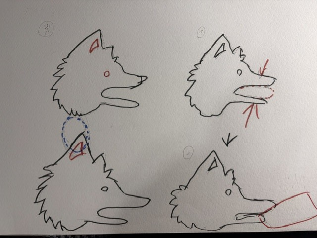
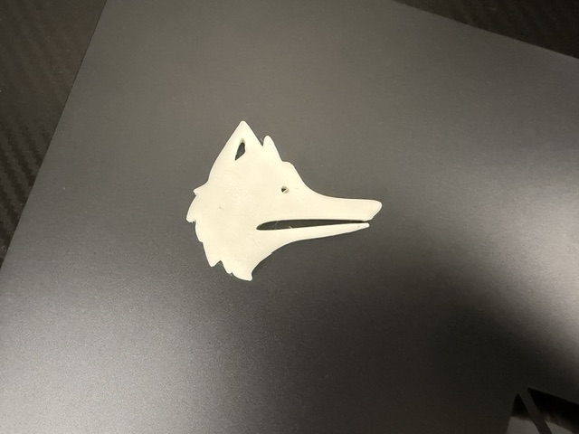
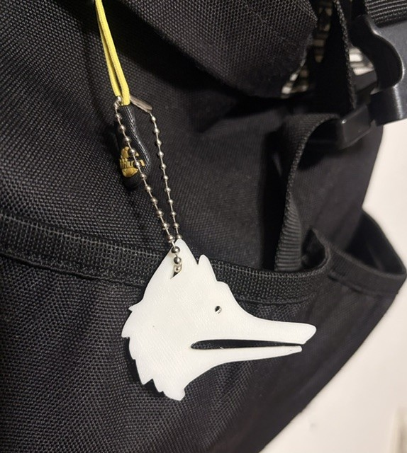
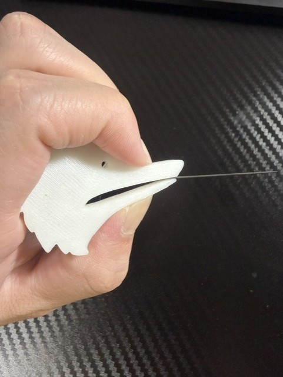

耳の部分に空洞を作ることで、
ボールチェーンを通してキーホルダーとして使える


家で犬を飼っていることから、身近な存在である犬をモデルにした作品を作りたいと考えた。
また、普段から持ち歩いていても違和感がなく、キーホルダーとしても使えるデザインを目指した。
犬の形を表現するために曲線を多く使用する必要があったため、こちらの動画を参考にした
Fusion360 スプラインの書き方作ったサイズが大きかったため、縮小するために下の動画を参考にした。
Fusion360 サイズの縮小